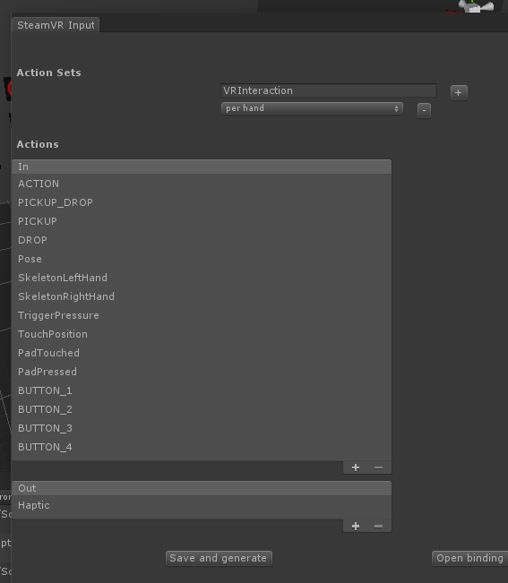
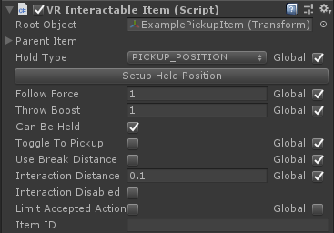
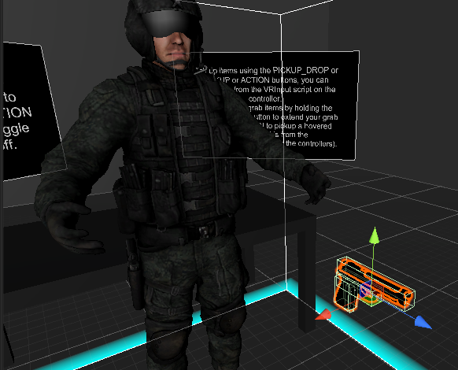
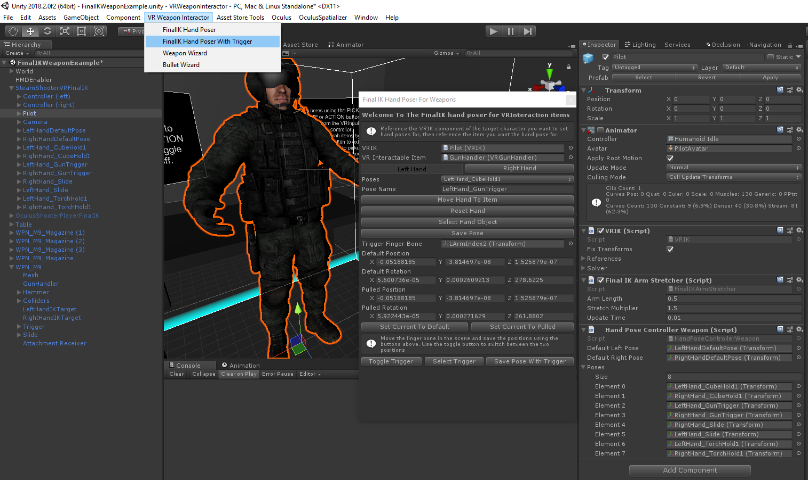
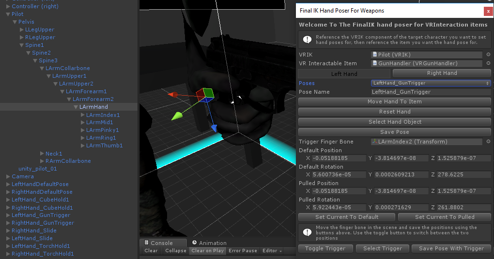

In the scene you must have either the SteamVR camera rig or Oculus Avatar rig with a VRInteractor and VRInput script attached to either or both controller objects. It should add all the scripts it needs.
For Tutorial videos please check out the youtube channel here.
The VRInteractor and VRInput scripts need to be attached to either or both controllers in order to pick up anything. You are able to configure exactly what you want each controller button to do from here.
Action Settings:
The name of the Actions (ACTION, PICKUP_DROP) corrospond to the method name in the VRInteractableItem or any script that inherits from a VRInteractbleItem.
The method name will be called on either the held or hover item when the key is pressed and the method name plus Released will be called when that key is released.
public void PICKUP_DROP(VRInteractor hand)
public void PICKUP_DROPReleased(VRInteractor hand)
Weapon Reference:
The weapon reference can be used to attached a weapon to a controller at startup. You can use this in conjunction with setting PICKUP_DROP buttons to none which will lock the weapon to your hand permanently.
For setting up SteamVR 2.0 there are some premade actions in Assets/VRInteraction/SteamVR_Actions, if you copy and paste them to the root folder (That's where the Assembly .csproj files are) then open the Window->SteamVR Input window, you should be able to see them, click Save and generate and they should appear in the VRInput script and should be assigned to bindings already if not then you can assign them in the binding UI page.
If you enable the global toggle on compatable variables in the inspector the item will use the global variable. The can allow you to quickly change how all items behave with one change. The primary reason for this is to allow you to add these settings to your games options menu. As an example if you wanted to add the options for players to change all items to use "Toggle to pickup" in your options menu you would add a line like this:
VRInteractionSettings.instance.settings.toggleToPickup = //Your gui code here VRInteractionSettings.instance.Save();
In the editor the global settings are saved in a text file at "Assets/VRInteraction/Resources/VRInteractionSettings.txt" and also as a player prefs string. This means settings you save before building will be the default settings when a new player installs, then if they change the settings it will be saved to their player prefs so will persist when closing and opening the game.
If you have the FinalIK asset you can create IK Hand poses for when holding. First you'll want to setup your finalIK character. you can check finalIK documentation for that and there should be a rig setup with the pilot model in Assets/VRWeaponInteractor/Integration/FinalIK/Scenes/FinalIKExample. With that setup drag an item into the scene and place in front of the character.
You can then open the hand poser window from VRWeaponInteractor->FinalIK Hand Poser. With that window open you can reference the VRIK component on the character rig and the VRInteracableItem (VRGunHandler/VRGunSlide/VRAttachment/VRMagazine and most script in VRInteraction inherit from VRInteractableItem.
You can chose which hand you'd like to pose first. Then if there is already a pose that you want to use or just use as a starting off point you can pick it from the Poses list. If this is the first pose that will be empty, you can then name this new pose (all pose names should be unique as the name us used to identify it later). With the name picked you can click "Move Hand To Item" if you chose a pose from the list it will position and pose the hand around the item, you can then change the name if this is a new pose or leave it the same if you want to use the same pose on this new item.
You can press "Reset Hand" at any time for the hand to default back. You can click "Select Hand Object" to select the root bone of the hand in the hiarachy, this is the first bone you'll want to move to start positioning the pose. Once you are happy with that position you can start positioning all the child bones until you are happy with the hand pose. Once that's done you can click "Save Pose" and the new pose will be added as an object under the root of the player rig and the item will have the name and hand offset added. For most items that's it and you should be able to play the scene and see that work.
You can click "Reset Hand" and switch tabs from left to right hand to setup the other hand repeat the steps, usually it not work very well if you try to use a left hand pose with the right hand bones so it's a good idea to keep the naming convention to include which hand the pose if for. Make sure to apply the player rig and item prefabs once you've saved the pose so you don't lose it.
(Something go wrong and it's not mentioned here? Email me at sam@massgames.co.uk and I'll see if I can fix it.)